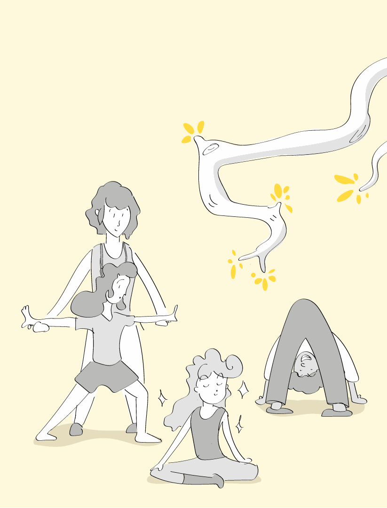
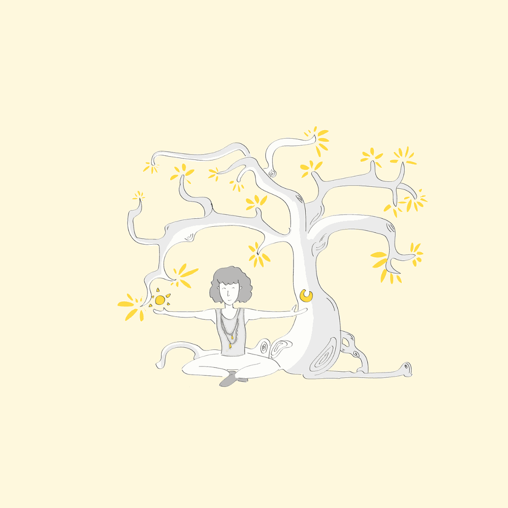
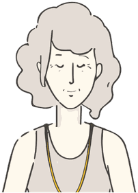

Valérie Trazic, professeure de yoga et yogathérapeute à La Ciotat
Le corps est notre première maison,
la respiration, un pont entre le corps et l'esprit.
Mon approche envisage l'être dans sa globalité : le corps, le mental, l'aspect émotionnel, aussi bien dans les cours de yoga que dans l'accompagnement en yogathérapie.
Je vous accompagne avec bienveillance et écoute sur le chemin de la connexion au corps et au ressenti pour aller vers l'unité, l'équilibre, l'apaisement.
Un chemin vers soi et vers le monde, un corps conscient, pour un corps vivant…
Yogathérapie
Comment acquérir des outils afin de devenir acteur dans son parcours de soin
En savoir +
Les cours de Yoga

Yoga Adapté Santé
Le mouvement est adapté aux possibilités et aux besoins de chacun pour bouger avec plaisir, en sécurité.
DécouvrirMon parcours
Le yoga fait partie intégrante de ma vie depuis longtemps. C'est devenu au fil des années une manière de vivre, de respirer, de regarder…
Un art de vivre que je cultive et dont je ne cesse de découvrir la richesse, l'étendue, la pertinence, que j'ai à cœur de faire découvrir.

Valérie Trazic
Professeure de Yoga
Yogathérapeute